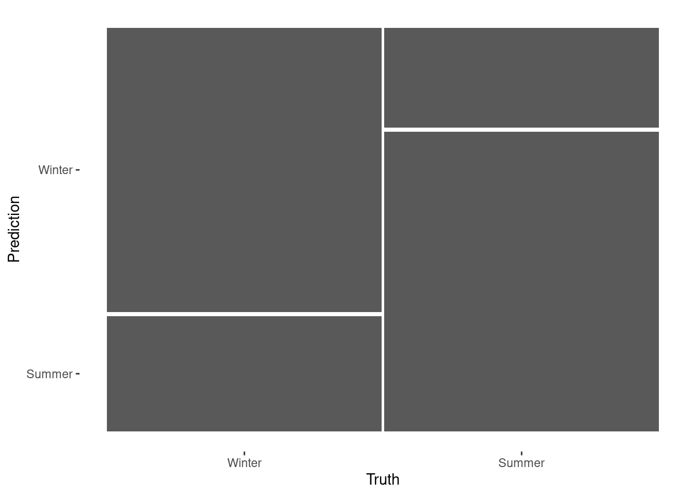
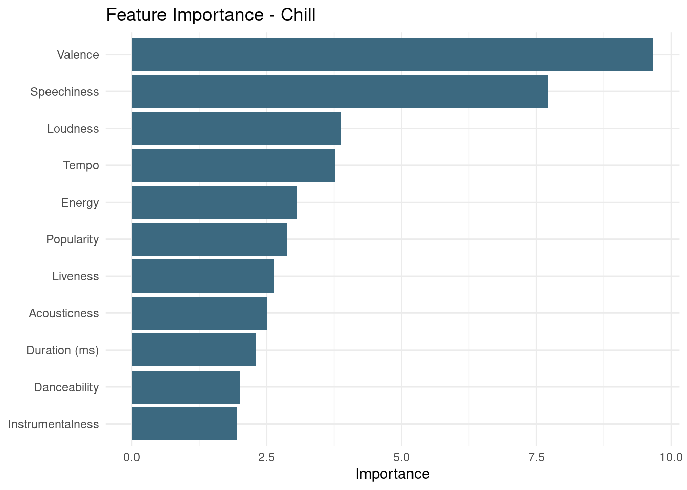
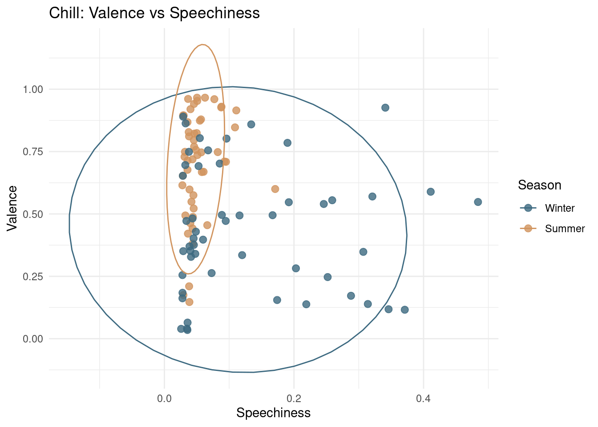
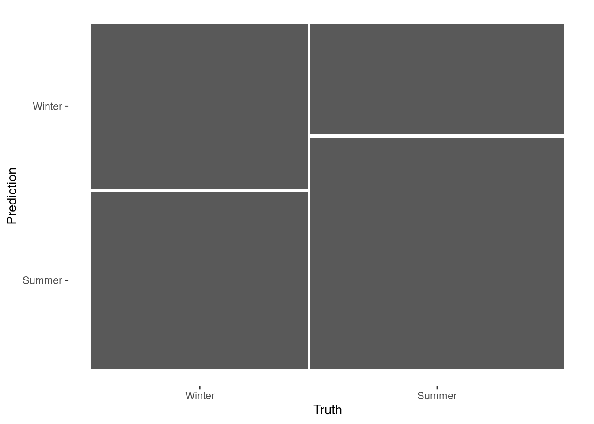
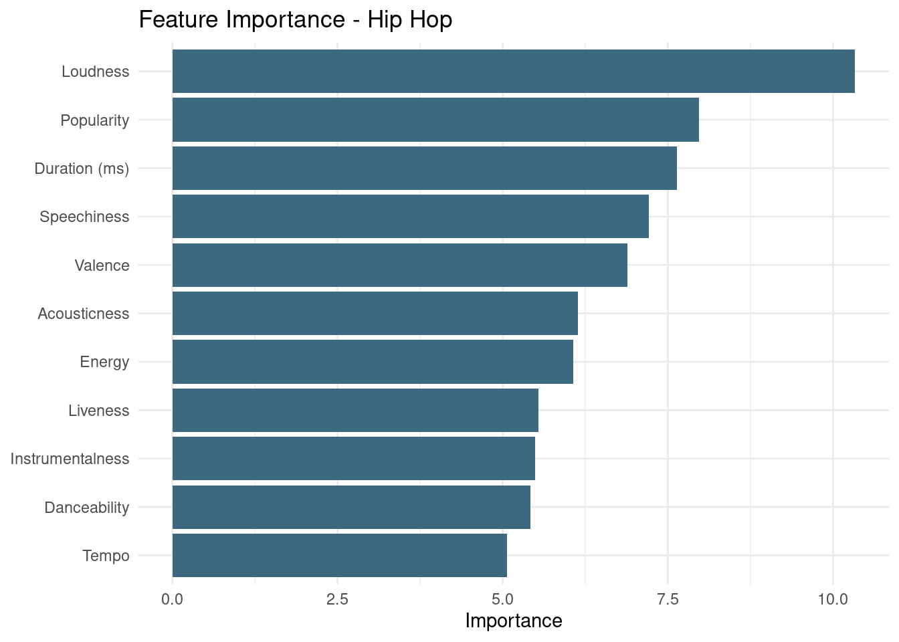
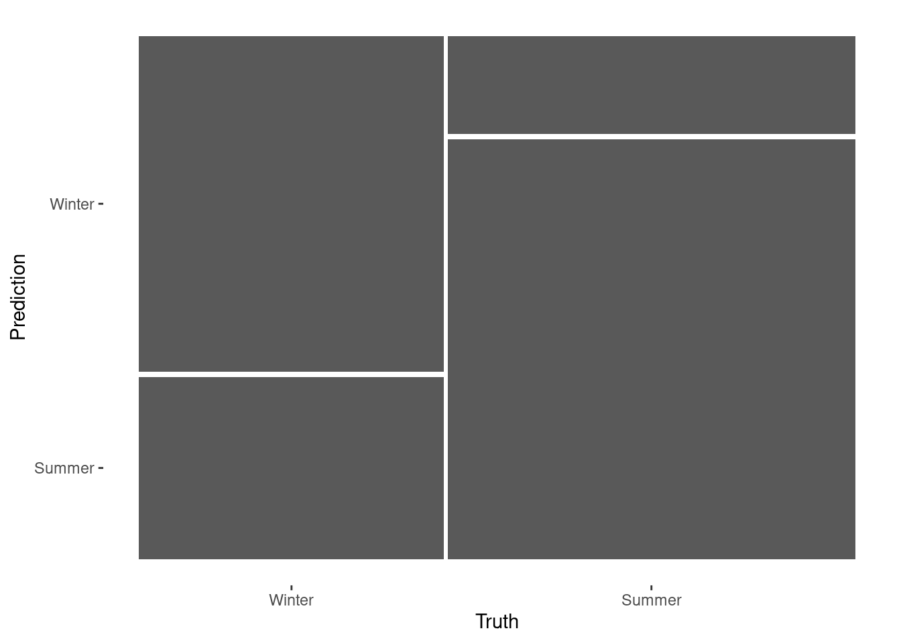
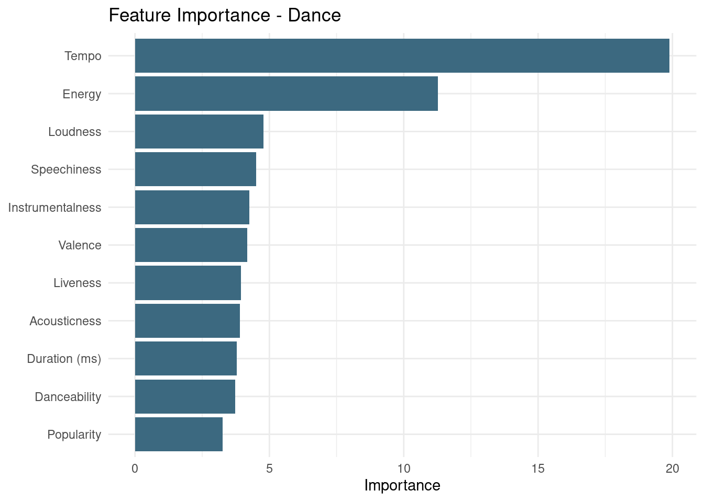
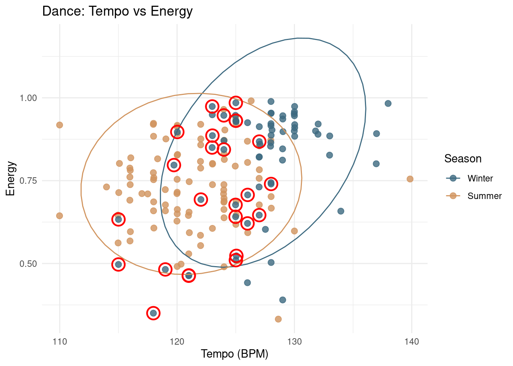

Classification and Clustering
Introduction
Where in last chapter I mainly focused on individual song features, I will now continue on the corpus exploration and dive deeper into corpus wide properties. We will do this by using classification. I chose classification rather than clustering because the main goal of this portfolio is to test whether my listening behavior differs between winter and summer. Since these seasonal labels are already known, classification is a more direct fit, as it allows me to evaluate whether Spotify features can actually distinguish between the two seasons. Clustering is more exploratory, since it searches for groups without using predefined labels, and is therefore less directly aligned with my main question.
Classification
I will use random forests to test whether Spotify track-level features can distinguish between my winter and summer playlists within each genre. By building separate classifiers for chill, hip hop, and dance, I can examine whether the winter-versus-summer distinction is equally clear across genres, or whether some genres show a much stronger seasonal signal than others. In addition to the classification results themselves, the models also provide feature-importance scores, which help show which Spotify variables contribute most strongly to the seasonal separation.
Chill
# A tibble: 2 × 3
class precision recall
<fct> <dbl> <dbl>
1 Winter 0.74 0.712
2 Summer 0.722 0.75 The classifier performs reasonably well for Chill and does so in a fairly balanced way across the two seasons. The precision and recall scores are very similar for Winter and Summer, all lying 0.71 and 0.75, which suggests that the model is not strongly biased toward one class. The mosaic plot reflects this as well: the largest areas correspond to correct classifications, while the wrongly classified songs take up noticeably less space. This suggests that winter and summer chill songs overlap to some extent, but still differ enough in feature space to be separated with a decent level of accuracy.

The feature-importance plot suggests that the seasonal distinction in Chill is driven most strongly by valence and speechiness. Valence stands out as the single most important feature by a clear margin, while speechiness is the second strongest predictor. This fits well with the earlier corpus exploration, where summer chill appeared more positive overall and winter chill extended further toward more speech-like material. The remaining features, such as tempo, loudness, and energy, still contribute to the classification, but they seem to play a more secondary role.

The scatterplot helps make the classifier results more interpretable by showing how the two most important features, valence and speechiness, work together. Summer chill songs cluster fairly tightly in a region with high valence and low speechiness, while winter chill songs are much more spread out. In particular, winter chill extends further toward both lower valence and higher speechiness values.
Hip Hop

# A tibble: 2 × 3
class precision recall
<fct> <dbl> <dbl>
1 Winter 0.56 0.483
2 Summer 0.605 0.676The classification results for Hip Hop are clearly weaker than for Chill. The precision and recall scores are lower overall, especially for Winter, which has a precision of 0.56 and a recall of only 0.483. This means that the model misses a fairly large share of the actual winter hip hop songs. Summer performs somewhat better, with a precision of 0.605 and a recall of 0.676, but the separation is still only moderate. The mosaic plot reflects this as well: the correctly classified areas are only somewhat larger than the misclassified ones, which suggests that winter and summer hip hop songs overlap quite strongly in feature space.

The feature-importance plot suggests that the winter-versus-summer distinction in hip hop is not driven by one single dominant musical feature, but rather by a broader combination of variables. Loudness stands out as the most important predictor, followed by duration, popularity, speechiness, and valence. After that, the remaining features contribute at fairly similar levels. This fits the impression from the classification results that winter and summer hip hop songs overlap quite strongly in feature space: the model does not seem to rely on one especially clear separating dimension, but instead draws on a mix of relatively modest signals. In other words, the boundary between the two seasons appears to be more diffuse and distributed across several features rather than sharply defined by just one or two.
Dance

# A tibble: 2 × 3
class precision recall
<fct> <dbl> <dbl>
1 Winter 0.719 0.648
2 Summer 0.755 0.811The classification results for Dance are clearly stronger than for Hip Hop and also somewhat stronger than for Chill. The precision scores are similar for Winter and Summer, which suggests that when the model predicts a season, it is pretty equally reliable for both classes. The recall values tell a more uneven story, however. Summer reaches a recall of 0.811, while Winter only reaches 0.648. This means that the model is much better at recovering the actual summer dance songs than the actual winter dance songs. In practice, a relatively large share of winter tracks is still being classified as summer, even though predictions labeled as Winter are fairly accurate when they do occur. The mosaic plot reflects this as well: the correctly classified areas are clearly larger than the misclassified ones overall

The feature-importance plot shows that the seasonal distinction in Dance is driven most strongly by tempo. It stands out by a large margin as the single most important predictor, with energy clearly in second place. After that, the remaining features contribute much less and are relatively similar in importance. This suggests that the winter-versus-summer separation in dance music is mainly tied to differences in speed and intensity, rather than to a broad combination of equally strong features.

The scatterplot helps make the dance classification results more interpretable by showing how the two most important features, tempo and energy, work together. In general, winter dance songs tend to occupy the somewhat faster and more energetic part of the space, while summer dance songs are more concentrated in a slightly lower-energy and lower-tempo region. At the same time, the two groups still overlap quite substantially, which helps explain why the classifier does not perfectly separate them.
The red circles mark the winter dance songs that were misclassified as summer. I added these to better understand why winter recall was noticeably lower than summer recall. Most of these highlighted songs fall within or close to the area where the winter and summer clusters overlap. This suggests that the model especially struggles with winter tracks whose tempo and energy profile resembles that of the summer playlist.